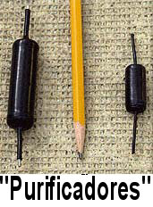

Ustedes lo han visto
Un artículo al que me refiero con frecuencia durante mis conferencias es ese extraño marcador que la mayor parte de nosotros hemos visto sacar de un cajón de las cajas registradoras cuando presentamos un billete de US$ 50 o más grande en una tienda o restaurante. Se llama “Smart Money Counterfeit Detector Pen” (“Marcador Detector de Falsificaciones ‘Smart Money’”, y lo fabrica DriMark Products, quien también fabrica artículos legítimos que funcionan de verdad. Lleva con orgullo un número de patente estadounidense. Ya desde hace años, los cajeros en todo Estados Unidos han usado este mercador para hacer una marca en una parte en blanco del billete, luego de lo cual, por lo general, lo aceptan. Dice en el mismo marcador que si la marca hecha en el billete es amarilla, el billete “pasa la prueba”. Si es negra, el billete es “sospechoso”.
Con la aprobación de la Oficina de Patentes de los Estados Unidos, y como viene de un fabricante importante, deberíamos esperar que el artilugio funcione; pero no funciona. Verán, de acuerdo con los documentos de la patente, el inventor asumió que los falsificadores usarían papel barato para imprimir su producto… ¡no es muy probable! El papel barato contiene almidón como “relleno” de modo que el papel se vea más brillante y lo manejen más fácilmente las máquinas impresoras, y el almidón se ennegrece en contacto con el yodo, ¡de modo que un marcador con tintura de yodo debería revelar el dinero falso! Sí, eso es lo que hay en el marcador: ¡yodo!
El Servicio Secreto de los Estados Unidos tiene la increíble responsabilidad, entre otras cosas, de protegernos del dinero falso. Nos dicen que hay más dinero falso circulando hoy que en cualquier otro período anterior de la historia. Esto es algo que debería preocuparnos a todos, ¿verdad? Me puse en contacto con el Servicio Secreto de los Estados Unidos y le pedí su opinión oficial sobre este dispositivo. “¿Funciona como se publicita?”, le pregunté. “No es de fiar”, respondió, luego de consultar un manual que tenía cerca. “No es de fiar, digamos, ¿un 100% no fiable?”, le pregunté. “Podría decirse”, respondió. Verán, los oficiales federales nunca responden “sí” o “no” a ninguna pregunta en su trabajo.
Créanme, el dinero falso nunca estuvo más seguro que cuando se lo prueba con el marcador “Smart Money”. Y, no olviden, ¡cada billete realmente falso que este dispositivo no detecta, vuelve a circulación! Entonces, ¿qué hacer? En los Estados Unidos, ponerse en contacto con la oficina local del Servicio Secreto y pedirles su panfleto “Know Your Money” (“Conozca su dinero”), que los ayudará a decidir ustedes mismos la autenticidad del dinero que pasa por sus manos. Este falso marcador nunca lo logrará…
Más insultos y cambios de nombre
En una carta a John Atkinson de Stereophile Magazine (vea el artículo de la semana pasada), Joseph M. Cierniak, que publica y edita la revista “Sound Off”, escribió:
En la columna de noviembre de Art Dudley (Listener) describió a James Randi (cuyo verdadero nombre es Randall Zwinge) como “un autodenominado mentiroso y artista de la estafa”. ¡Asombroso! Apostaría que ya que en algún momento el Sr. Zwinge realizó un acto mágico, la cita de referencia era de los días de su espectáculo mágico, un comentario humorístico para llamar la atención, y no una cita de su vocación presente de refutar cultistas como el Sr. Dudley. Hablemos sobre la práctica hipócrita y amarillista de usar una cita parcial fuera de contexto; William Randolph Hearst le sonríe al Sr. Dudley.
No, Joseph, mi “verdadero nombre” es James Randi. Mi nombre de nacimiento era Randall Zwinge, pero fue descartado legalmente hace mucho, ¡y ahora no existe nadie con ese nombre! Tiene bastante razón en cuanto a la atribución de la cita, sin embargo.
Tomándole la palabra (?) al señor Dudley, notifiqué a la televisión pública que al menos en dos ocasiones han presentado programas presentando un artista del engaño. Pruebas al canto: el señor Zwinge en la televisión pública refutando las mismas cosas que el lunático analógico fronterizo (léase el señor Dudley) afirma ser ciertas como el evangelio. Hubo risas del otro lado de la línea y luego un clic cuando me colgaron. Con impecables credenciales de lunático fronterizo en el área del audio, ¡quizá el señor Dudley debería pedir un tiempo igual! Pero no termina allí.
El señor Dudley luego escribe en su columna en relación con el señor Zwinge: “¿Por qué un empecinado buscador de la verdad considera necesario cambiar su nombre?”. ¿Eh? ¿Qué tiene que ver un cambio de nombre (por el propósito que sea) con la credibilidad de la persona que se cambia el nombre? ¿Sabe que un ex presidente estadounidense cambió su nombre de nacimiento de Leslie Lynch King a Gerald Ford? ¿Y qué?
Para responder por qué cierta persona en Stereophile podría cambiar su nombre sugiero que el señor Dudley lo compruebe con Sam Tellig (?), uno de los editores contribuyentes mayores de Stereophile; quizá el señor Tellig pueda proporcionar una respuesta más íntima en relación con un camibio de nombre. ¡La experiencia personal del señor Tellig en cuanto a su cambio de nombre sería una lectura interesante!
Éste por supuesto es el mismo señor Tellig que afirmó hace años en su columna de Stereophile que recubrir CDs con Armor All mejoraría el sonido. La aplicación de Armor All no mejoró el sonido, ¡pero los lectores furiosos bombardearon a la revista con correo preguntando quién iba a pagar por sus CDs arruinados por la aplicación de Armor All!
Extrañamente, ¡ni siquiera el señor Atkinson le ha pedido a esa gente en su oficina por qué traicionaron a sus clientes y colegas tan descaradamente cambiándose los nombres! Intelectualmente deshonesto, diría yo, pero ya escuché antes esa frase. En resumen: como pasa con los psíquicos que mienten y engañan al público, estos “expertos en audio” que apoyan nociones y dispositivos obviamente ridículos no rinden cuentas ante nadie, ni siquiera ante sus clientes. Atkinson y Dudley siempre deben seguir esquivando y oscureciendo y Atkinson tiene que defender a su columnista Dudley a toda costa. Mienras Stereophile Magazine siga obteniendo US$ 5,99 por copia y proporcione alguna información útil a los lectores (junto con basura pseudocientífica), los empleadores de Atkinson se relajarán y contarán el dinero. No hay lugar para que la honestidad o la integridad exhiban su incómoda presencia…

En un momento perfecto, dos nuevos ridículos dispositivos “mejoradores” de audio han aparecido en el mercado para venderse a los incautos. El primero es el “Preparador de cables AudiodharmaTM”, fabricado por “audio excellence az”, ¡quienes nos cuentan con orgullo sobre su sistema para cocinar conductores en una especie de horno corriendo varias señales y corriente a través de los cables nuevos que no han atravesado correctamente el “período de prueba”! Audio Excellence az dice que “representan SÓLO a aquellos diseñadores cuyas innovaciones son avances para la música. Bueno, ¡he ahí la prueba! Como si se necesitara más, publican el hecho de que este horno es un “COMPONENTE RECOMENDADO POR STEREOPHILE DESDE HACE MÁS DE TRES AÑOS” y aseguran a los lectores que “será completamente evidente por qué los resultados con el PREPARADOR DE CABLESTM con frecuencia son bastante audibles después de un breve período de 24 horas de uso”. Las cajas se venden por US$ 649 el modelo “normal” y US$ 779 el “profesional”.
Sigue en esta presentación el “Optimizador Halógrafo Shakti de campos de sonido”, reseñado por Wayne Donnelly, quien es uno de los “expertos” que no han respondido a mi desafío abierto de verificar los artículos fraudulentos que han apoyado, incluyendo las “piedras” que Shakti también vende a los engañados compradores de audio. Sólo hay que leer cómo Donnelly se pone poético con el último “descubrimiento” de Ben Piazza:
Al sonar las primeras notas, la habitación pequeña y repleta se transformó en un espacio voluminoso. El campo de sonido de pronto se extendió al menos hasta las paredes laterales y traseras, si es que no las superó. Leyendo la expresión en mi rostro, Ben sonrió y comentó: “Bueno, hasta ahora eres el más rápido… un segundo”. […] La expansiva presentación espacial era demasiado dramática para pasarla por alto, ya sea que uno tenga buen oído o no. Más aún, mientras la música continuaba parecía no sólo mayor en escala, sino más rica en armonías, y a la vez más dinámica y más relajada.
Debemos asumir que el señor Donnelly posee un oído tan bueno como para evaluar este milagro sin hacer una prueba doblemente ciega, por supuesto. ¡Qué afortunado es!
Luego explica a sus lectores la teoría de Piazza sobre este dispositivo, la cual todavía debo describirles:
Los halógrafos mejoran la interfaz entre el sistema y la habitación generando resonancias “musicalmente complementarias” que de algún modo anulan la audibilidad de los sonidos reflejados que vienen de los primeros puntos de reflexión y otros límites de la habitación que confunden al oído llegando más tarde que la salida directa de los emisores. (Si esta explicación no le resulta totalmente clara, únase al club.) Recomiendo enfáticamente leer el sitio para una descripción algo más extensa de cómo funciona el Halógrafo… aunque luego de leerla completa varias veces todavía no la entiendo del todo. Pero no hay forma de malinterpretar la fervorosa alabanza de numerosos usuarios del Halógrafo que están extremadamente conformes.
Ben Piazza se rehúsa a nombrar las exóticas maderas claras y oscuras que componen las tres piezas verticales onduladas de cada colección, que son la clave del diseño… al menos hasta que le den su patente.

Ahora es el momento de que sepan cuál es este maravilloso invento. La ilustración lo dice todo. Ese es el lado izquierdo de un conjunto de palos de madera retorcidos puestos en pedestales. Ensamblados con un destornillador. ¡No hay conexiones, ni electrónica, ni cables, solo se ubican ahí en el suelo como un par de percheros, funcionando por la magia y la fe! Pero sigan leyendo cómo Donnelly se conmueve:
Los graves se vuelven más rápidos y más firmes, con mejor definición de frecuencia. Las imágenes vocales e instrumentales por lo general tienen más dimensionalidad y estabilidad lateral. Emerge un detalle de bajo nivel antes inadvertido, y la presentación completa adquiere una calidad más relajada y naturalmente musical que es difícil describir, pero fácil disfrutar (en mi caso, con frecuencia en lo profundo de la noche) …
Luego se embarca en sus ataques a nosotros las personas racionales que preferimos hechos y evidencia antes que poesía:
Me encanta reseñar este tipo de productos: algo que es tan poco convencional y difícil de explicar, pero funciona perfectamente. Me refiero a que tontear con estas cosas es muy divertido, y los dividendos audibles son tan extraordinarios que no puedo imaginarme volver a decidir escuchar mi equipo sin ellos. Más allá de ello, me divierte imaginar por adelantado la reacción violenta de los que dicen “No encuentro esto en mis libros universitarios de ingeniería, física o lo que sea, así que debe ser un fraude” y que patrullan incansablemente los sitios web de audio para desalentar al audiófilo crédulo de engancharse en algo demasiado original. Por supuesto hay muchos amantes del audio crédulos por ahí, y no hay escasez de productos fraudulentos. Pero, ey, muchachos (siempre son hombres), los Halógrafos son reales.
Sé que no sey un científico ni un ingeniero, ni he interpretado jamás a uno en TV. Pero a menos que me falle la memoria, el método científico consiste esencialmente en observar un fenómeno y luego trabajar en descubrir qué lo produce, no en rechazar lo que no condice con el estado actual del conocimiento. Me parece que muchos que se proclaman “refutadores” han perdido de vista este principio, especialmente aquéllos que declaran desdeñosamente que no se han molestado en escuchar el artículo que atacan.
La memoria te falla, Wayne. ¡Lo primero que hace un investigador científico es descubrir si existe un fenómeno que examinar! Por ejemplo: ¿cómo hace un hombre gordo de traje rojo para bajar por una chimenea? ¡Epa! Primero averiguemos si hay un gordo, antes de medir las chimeneas… Y en cuanto a no haber probado yo mismo esos feos palos de madera, se lo dejaré al señor Donnelly, para que pueda mostrarnos, por medio de una simple prueba doblemente ciega, que hay una diferencia cuando los palos están en su lugar… ¡y puede ganar el millón de dólares, si hay alguna diferencia! Ah, pero me olvidaba: ya le hice esa oferta a Wayne Donnelly, así como a Frank Doris, Clay Swartz, Clark Johnson, David Robinson, Larry Kaye, Bill Brassington, Bascom King, Wes Phillips, Jim Merod, Dick Olsher, Peter Belt, May Belt, e incluso a Benjamin Piazza, el inventor y fabricante de estos palitos; y todos se han acobardado.
Ah, pero el señor Donnelly no ha hecho sino empezar; tiene mucho más críticas favorables que hacer de esas extrañas esculturas de madera:
Aunque estoy conforme con el concepto de que manipular resonancias en el entorno de escucha puede afectar el sonido, me sorprende el alcance y el grado de las mejoras atribuibles al Halógrafo. ¿Cómo diablos se le ocurrió esta idea a Ben Piazza? ¿De dónde sacó el concepto de este notable resultado? Aunque sería fantástico saber el por qué y el cómo de los efectos del Halógrafo, para mí realmente no es necesario. Lo importante es la música.
Wayne, te diré cómo diablos se le ocurrió esta idea a Ben. Se dio cuenta de que hay fanáticos del audio que creerán automáticamente las reseñas escritas por incompetentes, y que no importa cuan ridículas sean las afirmaciones, está a salvo de que cualquiera de su círculo de favorecedores se atreva a pedirle que las prueben. Un día, pensó para sí: “Me pregunto. Si compraron unas piedras, ¿comprarán también unos palos feos? Y concluyó que probablemente lo harían, y tenía razón.
¿El precio? Por esas dos estacas totémicas, sólo US$ 999.
Wayne sigue:
En mi opinión, el Halógrafo está a la par de los Purificadores Cuánticos Bybee como las mejoras más significativas de reproducción que he encontrado en más de tres décadas a la búsqueda de audio excelente. Me cuesta pensar en otra cosa que pudiera adquirir por mil dólares que pudiera compararse a los beneficios musicales del Halógrafo. ¿Qué audiófilo serio no querría esos beneficios? Hasta me doy cuenta de que especulo con preguntas del tipo: “¿Qué sonaría mejor, un equipo de US$ 2.000 o uno de US$ 1.000 con Halógrafos?” […] Son tan efectivos que sería imposible juzgar adecuadamente cómo califican otros componentes para equipos en una escala numérica. Sospecho que los Halógrafos podrían convertir un audio muy deficiente en algo aparentemente brillante. En consecuencia, voy a tener que ajustar mi proceso de reseña para incluir un intervalo significativo de evaluar equipo sin los Halógrafos. […] Me contentaré con instar a cualquier escucha serio que pueda darse el lujo que simplemente lo compre, y descubra las glorias de la notable creación de Ben Piazza.
Las risitas que se oyen en segundo plano son del señor Piazza…
Si se preguntaban qué son los “Purificadores Cuánticos Bybee” mencionados con entusiasmo al pasar en el texto del señor Donnelly que citamos, los fabricantes dicen en su publicidad que estos pequeños objetos para insertar en las líneas
…operan en el nivel mecánico cuántico para regular el flujo de electrones que componen la señal (imagínense una luz de medición que regula el flujo de tránsito en una autopista). El flujo de corriente dentro del Purificador Cuántico no tiene impedimentos y es ideal (imagínense un flujo de tráfico sin dificultades en una autopista con pocos automovilistas). Durante el tránsito a través del Purificador Cuántico, la energía del ruido cuántico se retira de los electrones, alineando su flujo por medio de los correspondientes conductores. La energía de ruido cuántico no deseada se disipa como calor dentro del Purificador Cuántico. Cuando los electrones aceleran dentro del purificador, se forma un efecto de “impulso helicoide” que facilita el flujo de corriente en los conductores circundantes del sistema de reproducción. Incorporar la Purificación Cuántica Bybee en la ruta de los electrones mejora la reducción de ruido y la velocidad de la señal, resultando en una mejora de rendimiento que supera lo que puede obtenerse con cualquier cable solo, no importa cuán bien esté diseñado.
Tengo poco que comentar sobre la validez probable de la teoría del “Purificador Cuántico” que se menciona más arriba; dejaré que ustedes hagan su propia evaluación. Pero ¿”la energía del ruido cuántico se retira de los electrones”? ¡Me suena improbable, amigos! Prepárense simplemente para desembolsar US$ 1200 por un par de estos artículos, si quieren probarlos. Sólo tengo que trajinar con cables comunes de cobre para altavoces, nada de piedras mágicas, y ni un árbol de madera a la vista…
Aportando lo que es de esperarse sea el final de esta cháchara, debo decirles que el editor de Stereophile, John Atkinson, está horrorizado de cuán mal he presentado su despotricar. Dice:
Atribuir correctamente a la gente lo que dice y hace es el requisito más elemental para cualquiera que publique artículos de cualquier clase. Esos no son errores triviales por su parte, revelan una falla fundamental de su carácter. Como escribí: “intelectualmente deshonesto”. […] Por favor tenga en cuenta que aunque no me contuve en expresar mi opinión sobre las actividades de usted cuando me preguntaron, no escribí nada del texto que me atribuye en su sitio web.
Le pregunté inmediatamente:
¿Usted no escribió el artículo sobre rabdomancia ni los comentarios sobre el desafío de la JREF? ¿Sí o no?
Respondió:
Señor Randi, nuestros mensajes se cruzaron. Sí, expresé mi opinión sobre el desafío del millón de dólares, en el primer texto que usted citó en el comentario de su sitio web [de la semana pasada]. Mis disculpas por “actuar a lo Randi” con eso. (Lo siento, no pude resistirme a ironizar.) Pero no, no he escrito palabra alguna sobre la eficacia de la rabdomancia, ni recibió mensaje alguno por e-mail o correo electrónico por parte suya ni encontré ningún artículo escrito por usted en el Audio Asylum en respuesta a nada que yo haya escrito. Por favor tenga en cuenta que yo no escribí el [… fragmento sobre la realidad de la rabdomancia]. Ni escribí [las acusaciones sobre las pruebas “trampeadas”].
Yo tuve un problema con el formato y protocolo del foro de mensajes sobre audio al cual se me envió para ver la basura que se estaba difundiendo sobre la JREF, pasé una hora o dos allí, y confundí algo de lo que Dudley y otra persona desconocida habían estado enviando, confundiendo citas con comentarios directos; sin darme cuenta le atribuí algunos de ellos a Atkinson. Como le escribí cuando se quejó conmigo: “Es difícil distinguir a los chiflados”.
Un lector conocido como “Andkon” también tuvo algunos intercambios de mensajes con Atkinson. Me escribió:
Me pregunto si nuestro amigo John Atkinson se está cansando de responder a docenas de los que, como yo, le hemos escrito. Estaba bastante fanfarrón durante los primeros mensajes, corrigiendo mi gramática y cosas así, pero luego de unos pocos asaltos de evadir esta pregunta: “¿Puede explicar cómo rocas o metales cualesquiera mejoran el sonido de nada?” el señor Atkinson se cansó y se puso furioso. Respondió:
¿Por qué tengo que hacerlo? ¿Y qué te hace pensar que las Piedras Shakti son “rocas o metales cualesquiera”? ¿Sólo el que Randi el Asombroso te lo diga? Trata de pensar por tí mismo, imbécil, y deja de hacerme perder el tiempo con emails petulantes.
Esa es una actitud interesante por parte del editor de la revista Stereophile, quien también pone opiniones y frases en mi boca. ¿Una pregunta seria de un interrogador persistente se vuelve “petulante” cuando es muy difícil de contestar?
Campanas de alarma en el Reino Unido
El lector británico Les Rose, de Pharmavision Consulting Ltd., nos trae este informe sobre la actual situación increíble en relación con la “medicina alternativa” en ese país:
Lo que más me preocupa es que un comité parlamentario convocado por el gobierno del Reino Unido para informar sobre MCA [Medicina Complementaria y Alternativa], y cuyo informe fue publicado en 2000, clasificó las prácticas “alternativas” disponibles, y describió un grupo como aquellos “que carecen de cualquier base de evidencia creíble”. Aún así el Servicio Nacional de Salud [NHS] continúa promoviendo estas prácticas y de hecho el gobierno ha anunciado recientemente una expansión en su uso. Por más de 50 años, el NHS ha operado cinco hospitales homeopáticos, y actualmente está gastando £18 millones en hacer reparaciones al de Londres. El informe del año 2000 también recomendaba que debía hacerse una evaluación independiente de la MCA para indagar su efectividad en relación con su costo, evaluación que el gobierno también se rehúsa a encargar.
Algunos miembros del foro de la JREF creen que los ministros del gobierno pueden estar violando la ley, ya que están tomando decisiones que exceden sus poderes, promoviendo tratamientos para los cuales no hay evidencia. En mi mensaje anterior me referí a mis extensos intercambios de correo electrónico con el presidente de la Asociación de Fundaciones del NHS, un cuerpo asociado, que auspicia al Directorio del NHS para los Practicantes Complementarios y Alternativos (vea http://www.nhsdirectory.org/default.asp). Es un médico de altas calificaciones e incluso condecorado, que debería estar más informado como para no recomendar la rabdomancia, la terapia de cristales y la radiestesia a los pacientes del NHS, lo cual está haciendo por medio de este directorio.
Creo que el gobierno del Reino Unido debería ser desafiado por una organización con alguna fuerza, como la JREF. Es triste decirlo, pero parece no haber una organización equivalente en el Reino Unido.
Les, nuestro desafío es abierto, se aplica a cualquiera, en cualquier parte, en cualquier momento. Nos sentamos con paciencia esperando que nos llamen, pero nos resulta muy difícil haciendo que las agencias estatales y federales de nuestro país respondan a nuestras alertas, y ni digamos a nuestros desafíos…
Dennis Lee ha vuelto… con un fraude piramidal religioso
¿Recuerdan al chiflado que ha estado prometiendo un Generador de Electricidad Libre (GEL) desde hace ya varios años, a quien hemos descrito en varios lugares, como http://www.randi.org/jr/nov092001.html y http://www.randi.org/jr/102601.html [en inglés]? Hace mucho tiempo decidimos que por su total descaro e ignorancia Lee estaba en la cima de la lista de “descarados”, ¡y esa es una categoría muy competitiva, amigos! Un lector anónimo nos cuenta:
He aquí un informe de en qué anda Dennis Lee. Ahora tiene un nuevo ministerio cristiano al que afirma que uno puede donar y se multiplicará porque él fabricará GELs y venderá electricidad. Pero no puede demostrarlo hasta que 1.600.000 “testigos” estén listos para ver 100 demostraciones simultáneas en todos los Estados Unidos en estadios. Dennis está buscando que sus “auspiciantes” paguen US$ 10 cada uno para auspiciar a un testigo para las demostraciones y el “testigo” podrá obtener una comisión de US$ 1.000 al año de la venta de electricidad que producen esos GELs de 30 KW. Los testigos obtendrán electricidad gratis de por vida, hasta 26.000 KWh cada año.
Afirma que puede obtener Electricidad Libre de un “motor Hummingbird” con imanes permanentes, que “produce una salida 5 unidades de energía mecánica por cada unidad de entrada eléctrica”. Sólo tiene que conectar ese motor Hummingbird que “demostró” en todo el país en un recorrido en 1999 a un generador Sundance que es 100% eficiente, y estas dos cosas generarán 30 KW de energía eléctrica sin polución. También afirma que puede propulsar motores con agua, jugo de encurtidos, etc. Pero la verdad es que la cortadora de césped que muestra a los creyentes sólo funciona un minuto con la gasolina que flota por encima del agua y la basura.
Lee ahora promueve su nuevo “ministerio” (“Reyes y Sacerdotes”) y pide donaciones que se usarán para encontrar a los testigos en iglesias cristianas para que puedan instalar esos GELs en todas partes para empezar a vender electricidad a la red eléctrica. Afirma que será el proveedor eléctrico más importante en unos pocos años y que no contaminará, etc. Donará el 100% de las ganancias a las iglesias cristianas. Dennis dice que uno puede donar dinero a Reyes y Sacerdotes en lugar de hacerlo a una iglesia local. Cuando se encuentren los “testigos” y se instalen los GELs, las ganancias de vender la electricidad que generarán esos GELs de 30 KW serán para la iglesia que uno elija, de modo que US$ 100 donados al Ministerio Reyes y Sacerdotes podrían ser US$ 50.000 por año que se entregarán a la iglesia.
Dennis cuenta historias de cómo “halló a Jesús” y fue salvo, cómo conoció a profetas que dicen que él revolucionará los negocios y la energía eléctrica en los Estados Unidos, etc., cómo conoció al teleevangelista Pat Robertson quien invirtió US$ 100.000 con él, pero luego se retractó del trato, etc.
La última fecha para la que Dennis predice que estarán listos los testigos son las presentaciones del 4 de julio de 2005.
Si alguien más dice que esos son fraudes, entonces yo diré: “tengo más oportunidad de obtener dinero con otros fraudes que con la máquina de energía libre de Dennis Lee”.
Dennis Lee cuenta las mismas historias de cómo los científicos dijeron “las máquinas más pesadas que el aire no pueden volar”, aunque los pájaros vuelan y los hermanos Wright volaban cinco años antes de que el público escribiera al presidente Theodore Roosevelt y le pidieran que hiciera una demostración pública en Kitty Hawk. “Así que los científicos son estúpidos”, de acuerdo con Dennis Lee, cuando dicen que uno no puede obtener energía libre de los imanes.
¡PERO ESO NO ES TODO! Ya que cada tetigo obtendrá electricidad gratis de por vida (hasta 26.000 KWh cada año) y pueden encontrar nueve amigos más para que firmen por “Electricidad gratis”, eso podría ganarle US$ 10.000 por año para cada auspiciante que paga US$ 5 por cada videocinta o DVD que se les dará a los testigos, o sólo paga US$ 10 por cada testigo que se encuentre de todas las iglesias donde Dennis Lee está haciendo su recorrido en los próximos meses. La iglesia podría ganar US$ 45.000 por año para cada testigo. Ese dinero se usará para promover la moralidad y los valores cristianos en los Estados Unidos.
¿Nota usted un ESQUEMA PIRAMIDAL? Si sólo le envío un dólar a los cinco primeros nombres de la lista…
Deben estar apiñados en su oficina: Ruta 23 Norte Nº 3002, Newfoundland, Nueva Jersey. Están el Ministerio Reyes y Sacerdotes, la Comunidad Unida de Servicios de los Estados Unidos (distribuyen productos), Tecnología Mundo Mejor (desarrollan nuevos productos y tecnología), la Compañía Eléctrica Tesla Internacional (instalará, mantendrá y venderá electricidad de los Generadores de Electricidad Libre de 30 KW).
¡GUAU! ¡Todas esas compañías en la misma oficina y CON EL MISMO DUEÑO: DENNIS LEE! Ojalá alguien cerca de Newfoundland, Nueva Jersey, pudiera darse una vuelta para saber cómo son esas oficinas y el “centro de investigación”.
Dennis dice que el escéptico Eric Krieg es el “hijo del diablo” pero reza para que pueda “salvarse”.

Nuestro corresponsal agrega: “Quiero agregar la promesa de donar el 100% de la ganancia que obtenga de las loterías extranjeras que gano y de esos banqueros africanos que quieren enviarme millones de dólares”. A mí me suena noble.
Muerte por el consejo de un ángel
El lector Andrew Carver, de Ottawa, Canadá, nos cuenta otra tragedia generada por los sanadores “alternativos”. La “naturópata” de 68 años Louse Lortie ha ganado una apelación por una condena de homicidio involuntario y negligencia criminal seguida de muerte. Fue condenada por la muerte de una niña diabética al convencer a su madre, la masoterapeuta Sylvie Fortin, de ue reemplazara las inyecciones críticas de insulina de la niña con una dieta de azúcar de caña sin refinar y pociones de hierbas hechas en casa. Lisanne Manseau, de 12 años, murió en marzo de 1994, tres días después de empezar el tratamiento. Lortie fue condenada en 1999 y sentenciada a tres años en prisión. Ella apeló la decisión basándose en detalles técnicos.

La delicada naturópata, quien ahora usa una silla de ruedas para moverse, dijo que consultó al Arcángel Miguel (usando un péndulo) para determinar cuáles remedios de hierbas serían mejores para la niña, cuya condición seguía empeorando e incluía serios dolores de cabeza, problemas de riñón y depresión. Lortie dijo que Miguel le dijo que detuviera la administración de insulina para “desintoxicar” el cuerpo de la niña. “No se preocupe”, dijo Lortie, “porque Miguel nunca ha cometido un error”. A Fortin también se le dijo que Lortie había tratado a otros tres diabéticos sin ningún problema. Lortie instó a Fortin para continuar el régimen aunque la salud de la niña declinó y entró en coma.
Andrew nos cuenta que hubo “algunos gritos en el sitio del Centro Nacional para la Homeopatía, http://www.homeopathic.org/news0599.htm, donde un artículo en la misma página pregunta: “¿Por qué los doctores están en contra de la medicina alternativa?”. Mmmm, sí, ¿por qué será?
Jóvenes científicos en Italia

Mi reciente estadía en Europa se volvió más interesante al ver la presentación de “científicos jóvenes” en la conferencia del CICAP en Venecia. Una presentación que obtuvo mi atención absorta fue la que realizaron Niccolò Giuliani y Niccolò Tocazzi, que se muestra aquí. Parece que el agua coloreada vertida en la posición “A”, luego de mucho girar y sacudirse y transferir su movimiento a otros líquidos de distinto color en el sistema, impulsa el líquido final a la posición “B”. Luego, por medio del tubo etiquetado “T”, simplemente se vierte de vuelta a la posición “A”, lo que parece desafiar la gravedad, la conservación de la energía, y la mayoría de las otras leyes de la ciencia (incluyendo el sentido común). ¡Dispositivo ingenioso!
Mucha nada
Por el lector James Connor, nos enteramos que el siguiente artículo noticioso fue publicado en http://www.cyclingnews.com/ el 25 de noviembre:
El ciclista australiano Mark French está apelando su suspensión por posesión, uso y tráfico de una sustancia prohibida a la Corte de Arbitraje para el Deporte. French recibió una suspensión por dos años en las carreras así como una suspensión de por vida para los Juegos Olímpicos luego de admitir el uso de “Testicomp”, que contiene cantidades homeopáticas de glucocorticoesteroides y es ilegal bajo las reglas de UCI y WADA. Sin embargo, de acuerdo con los informes de los medios australianos, French afirma que las pruebas independientes de Testicomp en un laboratorio acreditado ante la IOC en Malasia no muestra signos de glucocorticoesteroides, y por lo tanto no debería ser ilegal.
¿Por qué no nos sorprende, querido lector? Pero hay que considerar esas temibles “vibraciones”…
French afirma que las autoridades sólo se basaron en lo que estaba impreso en la etiqueta de Testicomp (“contiene trazas de gluco corticoesteroides”) para sancionarlo, y que probablemente esta será la base de su apelación a la CAD.
Dice el señor Connor: “¡No sé qué es más tonto, tomar el menjunje o darle crédito a los homeópatas al prohibirlo!”
Más ataques a la ciencia en Washington
El Congreso estadounidense ha recortado drásticamente el presupuesto para la Fundación Nacional para la Ciencia (NSF), un organismo dedicado a la investigación en la ciencia y la tecnología. En 2002, el Congreso renovó la autoridad legal para los programas de ciencia, y votó par aduplicar el presupuesto de la NSF para 2007. El recorte llegó al mismo tiempo que los legisladores reservaron más dinero para proyectos locales esenciales como el Salón de la Fama del Rock’n’Roll en Cleveland, y el Museo del Clima de Punxsutawney, Pennsylvania.
La NSF apoya el trabajo y capacitación de muchos matemáticos, físicos, químicos, ingenieros, científicos de la computación, biólogos y expertos del entorno. El nuevo presupuesto es de US$ 105 millones menos de loq ue obtuvo el año pasado y U$S 272 menos de lo que solicitó el presidente Bush.
Estamos de acuerdo con el diputado republicano de Michigan Vernon J. Ehlers, quien es también un ex profesor de física. Declaró que el recorte fue
[…] miope en extremo y muestra un peligroso descuido del futuro de nuestra nación. Me sorprende que tomáramos esta decisión en un momento en el que otras naciones continúan superando a nuestros estudiantes en matemáticas y ciencias e invariablemente aumentan sus fondos para la investigación básica. […] La Fundación Nacional para la Ciencia apoya la innovación tecnológica que es crucial para la prosperidad económica sostenida de la que los Estados Unidos han gozado desde hace varias décadas.
Pero apostaría que los proyectos “basados en la fe” no reciben cortes de presupuesto.
En conclusión…
La semana que viene, les contaremos sobre la situación de deterioro de la racionalidad en Corea, y algunos detalles realmente sorprendentes y alarmantes sobre nuestro examen de una lectura de Sylvia Browne (de las que cuestan US$ 700 dólares cada una) que estamos analizando. A propósito, necesitamos algunas más de esas cintas, así que si conocen a alguien que tenga una, por favor hágannoslo saber. Como siempre, se garantiza un total anonimato.
Cerramos teniendo 400 registrados para The Amaz!ng Meeting 3, y Lynda está barajando toda clase de arreglos para los participantes y quienes se registran. ¡La última de las giras de The Slammer sale a subasta en eBay, y estamos acelerando el paso para enero!
Finalmente, ¡debemos contarles que nuestra capacidad de asombro se vio desbordada la semana pasada cuando supimos que nuestro amigo Penn (la mitad grande de Penn y Teller) se ha rendido al matrimonio! Vayan a http://www.vivalasvegasweddings.com/live_internet_weddings_nov2004.htm y hagan una búsqueda por Jillette, y luego hagan clic para ver la acción realizada…

Comentarios
Comments powered by Disqus